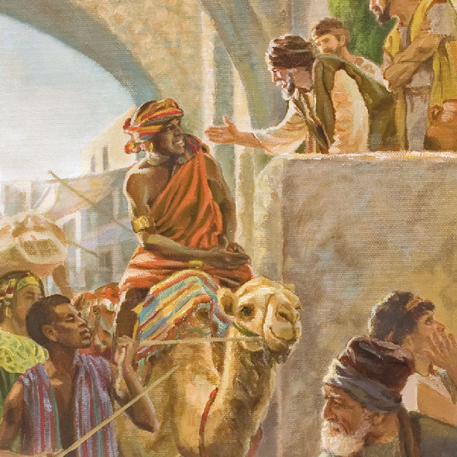
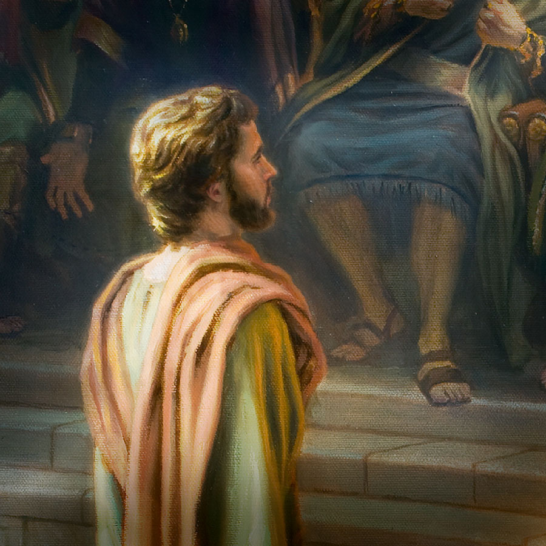
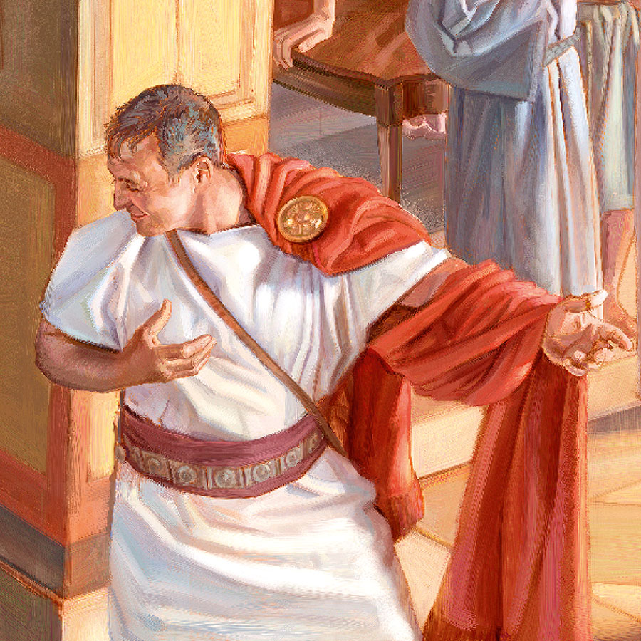
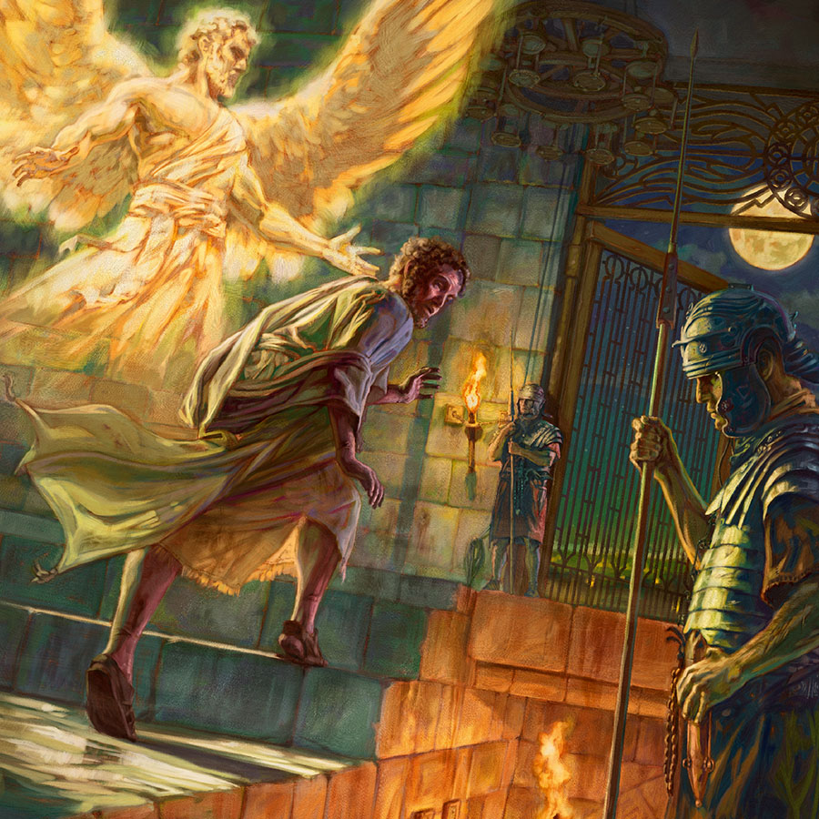
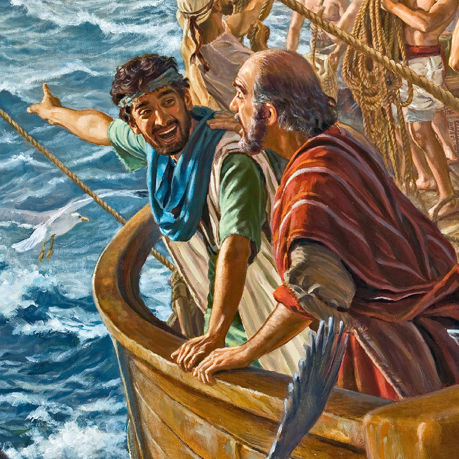
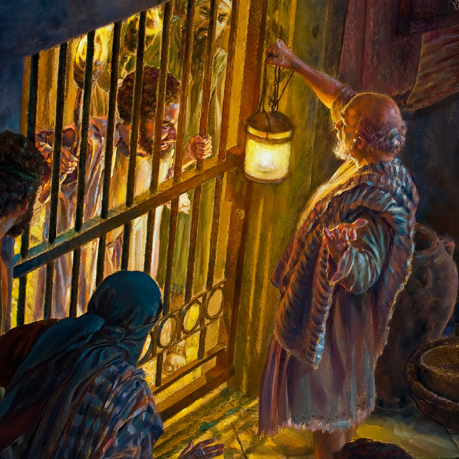
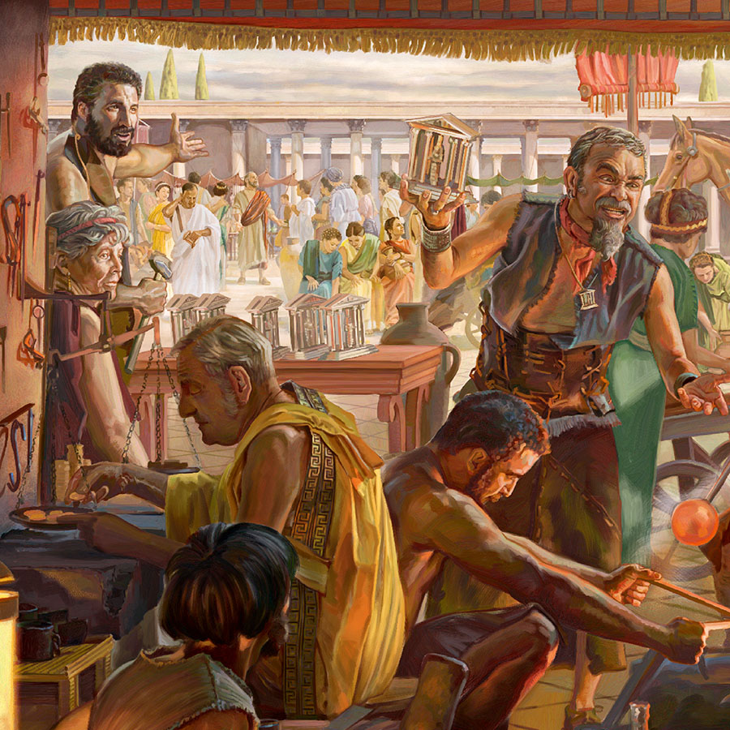
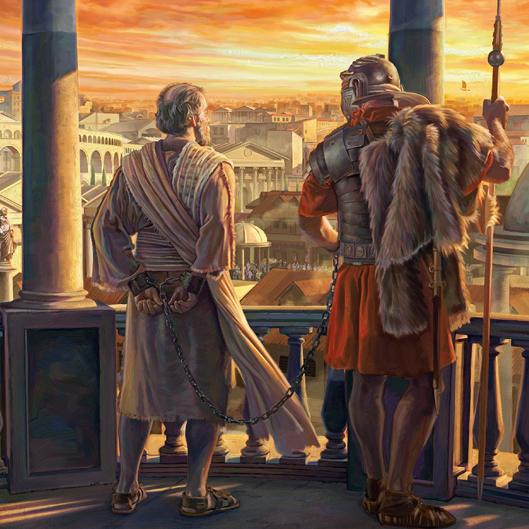

Covers Paul, Dorcas, Gallio, Luke, a temple officer with the apostles, a Sadducee, Paul being escorted to Caesarea, and modern-day witnessing with a sound car and a phonograph.
Page 1 Paul, in chains, and Luke aboard a cargo ship on its way to Rome.
Pages 2, 3 Brothers J. E. Barr and T. Jaracz of the Governing Body at a world map.
Page 11 Jesus commissions the 11 faithful apostles and other followers on a mountain in Galilee.
Page 14 Jesus ascends into the sky. The apostles gaze after him.

Page 20 At Pentecost, the disciples begin speaking to visitors in their own languages.
Page 36 The apostles stand before a raging Caiaphas. The temple officers are at the disposal of the Sanhedrin to make arrests.
Page 44 Bottom: After World War II, an East German court wrongfully convicted Jehovah’s Witnesses as American spies.—Periodical Neue Berliner Illustrierte, October 3, 1950.

Page 46 Stephen stands accused before the Sanhedrin. Wealthy Sadducees are in the background, and ultraorthodox Pharisees, in the foreground.
Page 54 Peter lays his hands on a new disciple; Simon is shown with a coin purse.

Page 75 Peter and his traveling companions enter Cornelius’ home. Cornelius wears a special cloak draped over his left shoulder to mark his rank as a centurion.

Page 83 Peter is led by an angel; the Tower of Antonia is the possible location of Peter’s imprisonment.
Page 84 Bottom: Mob violence near Montreal, Quebec, in 1945.—Periodical Weekend Magazine, July 1956.
Page 91 Paul and Barnabas are thrown out of Pisidian Antioch. The city’s new aqueduct is shown in the background, likely built during the early first century C.E.
Page 94 Paul and Barnabas resist adulation in Lystra. Public sacrifices were usually colorful and noisy occasions with lots of music.
Page 100 Top: Silas and Judas encourage the congregation in Syrian Antioch. (Acts 15:30-32) Bottom: A circuit overseer speaks to a congregation in Uganda.
Page 107 The Jerusalem congregation meets in a private home.
Page 110 Front row, left to right: Gerrit Lösch, David Splane, John Barr, Theodore Jaracz; back row, left to right: Stephen Lett, Anthony Morris, Guy Pierce, Samuel Herd, Geoffrey Jackson.

Page 124 Paul and Timothy are portrayed traveling aboard a Roman merchant ship. A lighthouse can be seen in the distance.

Page 139 Paul and Silas are depicted in a gated courtyard, escaping an angry mob.
Page 155 Gallio chastises Paul’s accusers. He wears clothing befitting his position: a white imperial toga with a broad purple stripe and calcei, a type of shoe.

Page 158 Demetrius addresses workers in a silversmith’s shop in Ephesus. The silver shrines of Artemis are sold as souvenirs.
Page 171 Paul and his companions board a ship. The Great Harbor Monument, built in the first century B.C.E., is shown in the background.
Page 180 Bottom: During the 1940’s literature ban in Canada, a young Witness smuggles Bible literature. (Reenactment.)
Page 182 Paul yields to the elders’ request. Luke and Timothy are sitting in the background, assisting with the delivery of the contributions.
Page 190 Paul’s nephew speaks to Claudius Lysias in the Tower of Antonia, possible location of Paul’s custody. Herod’s temple shown in the background.
Page 206 Paul prays for weary travelers in the hold of a cargo ship.

Page 222 The prisoner Paul, chained to a Roman soldier, viewing part of the city of Rome.